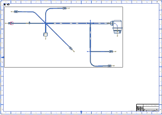
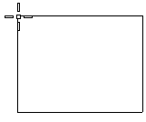
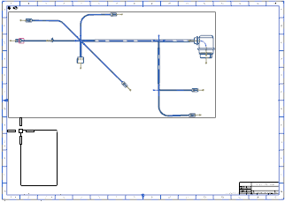
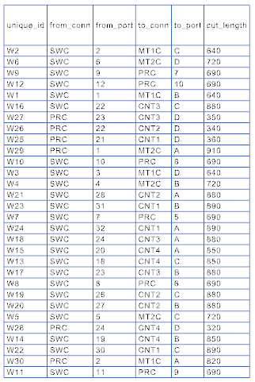

Start the Drafting application.
Right-click the border of the top view and choose Update.
Move the formboard view to the upper left quadrant of the drawing sheet by dragging its border.

Sheet “Sheet 1” Work
Choose Preferences→Annotation.
On the Fit Methods tab, clear all check boxes, and then select the Auto Size Column check box.
点击确定。
On the Formboard Tools toolbar, from the Formboard Net–List Drop–down list, select Cut Sheet Annotation .
A preview image of the cut sheet appears at your cursor.

Drag the image to the lower left quadrant of the drawing sheet.

Sheet “Sheet 1” Work
Click to place the cut sheet.
